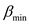
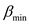
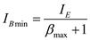
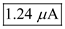
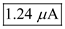

Calculate the emitter current of half circuit of differential amplifier.

Substitute for  .
.
The expression for base current is,
The bias current is maximum for minimum value of  and the bias current is minimum of maximum value of
and the bias current is minimum of maximum value of  .
.
Calculate the emitter current of half circuit of differential amplifier.
Substitute for .
The expression for base current is,
The bias current is maximum for minimum value of and the bias current is minimum of maximum value of .
Calculate the maximum value of input bias current, .
Substitute  for  and
for  and  for
for  .
.
Thus, the maximum value of input bias current,  is .
is .
Calculate the minimum value of input bias current,  .
.

Substitute  for and for
for and for  .
.
Thus, the minimum value of input bias current,  is .
is .
Calculate the value of largest possible input offset current,  .
.
Substitute for and for.
Thus, the largest possible input offset current,  is .
is .